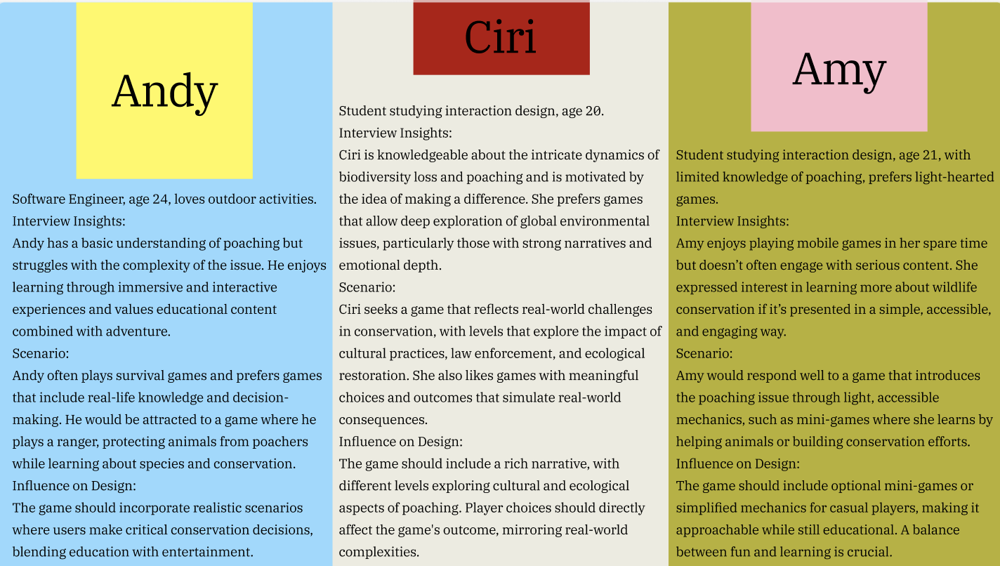

USER RESEARCH
Target User Persona

Empathy Map & User Journey Map


User Insight
Andy, 28
"I want realistic scenarios that challenge my tactical thinking."
Ciri, 31
"Games should explore complex cultural and ecological issues."
Amy, 25
"I enjoy learning while playing, especially about wildlife."